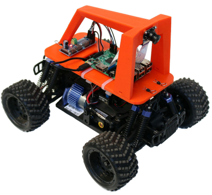

Robot Day Donkey Car Activity

The AI Racing League is a project designed to introduce Python, AI and machine learning to high-school and college students. As a result, all our Robot Day activities have one or more Donkey Cars available for use at these events.
ChatGPT Prompt
Create a five minute description of a Donkey Car
for a student at a Robotics Day event.
Assume the student is a fifth-grade student.
Include the following facts:
- The Donkey Car is a autonomous car built on a RC car chassis.
- It has a Raspberry Pi model 4 and a camera.
- It uses a chassis that is created on a 3D printer
- The parts together cost about $310
- The car is used to teach AI and machine learning.
- It is programmed with Python.
- To control it, students drive around a track and
gather images. These images are use to train
a neural network. The neural network then is
used to predict the speed and steering to
drive the car around a track without a human.
Return the result in a single pure raw markdown file.
ChatGPT Response for a 5th-grade Student
Title: Discovering the World of Robotics: The Donkey Car
Grade Level: 5th Grade
Event: Robotics Day
Introduction
Hello young explorers! Today, we're going to learn about a really cool invention in the world of robotics called the Donkey Car. It's not just any car; it's a smart car that can drive itself!
What is a Donkey Car?
Overview
- The Donkey Car is an autonomous car built on a remote-controlled (RC) car chassis.
- It's equipped with a Raspberry Pi Model 4 and a camera, acting as its brain and eyes.
- The chassis of the car is created using a 3D printer.
- The total cost of the parts is about $310.
- This car is an amazing tool for teaching AI (Artificial Intelligence) and machine learning.
Programming and Control
- The Donkey Car is programmed using the Python language.
- To train it, students drive it around a track to gather images.
- These images are used to train a neural network.
- The neural network helps the car predict the right speed and steering to drive autonomously, without human intervention.
Learning with the Donkey Car
Why It's Cool
- It's like a mini-robot that you can teach to drive itself.
- You get to learn about how machines can learn and make decisions.
- It's a hands-on experience in programming and robotics.
The Future of Robotics
- By understanding and working with the Donkey Car, you're taking a step into the future of technology and robotics.
- Maybe one day, you'll create your own smart machines!
Conclusion
Isn't it amazing how a simple RC car can be turned into a self-driving vehicle? That's the power of technology and creativity! Keep exploring, and learning, and maybe you'll be the one to invent the next big thing in robotics.
Thank you for joining me on this exciting journey into the world of the Donkey Car. Enjoy the rest of your day at the Robotics Day event!
11th Grade Response
Prompt:
Can you now generate another response, but for an 11th-grade robotics student who is learning Python? Again, please make sure you return the result in a single pure raw Markdown file that is easy to download. Use a level 3 header for each section.
ChatGPT Response
Deep Dive into the Donkey Car: An Autonomous Vehicle Project
Grade Level: 11th Grade
Focus: Python Programming in Robotics
Event: Advanced Robotics Workshop
Introduction
Welcome to the advanced session of our Robotics Workshop! Today, we'll be exploring the fascinating world of the Donkey Car, an autonomous vehicle that offers a practical and engaging way to apply your Python programming skills.
Title: Understanding the Donkey Car
The Concept
- The Donkey Car is an autonomous car built on an RC (remote-controlled) car chassis.
- It employs a Raspberry Pi Model 4 and a camera for processing and vision capabilities.
- Unique to this project, the chassis is designed and created using a 3D printer.
- The overall cost of the parts is approximately $310.
Educational Perspective
- The primary goal is to teach concepts of AI (Artificial Intelligence) and machine learning in a hands-on environment.
- Programming the Donkey Car in Python offers a real-world application of your coding skills.
Technical Aspects
Programming with Python
- Python serves as the backbone for programming the Donkey Car. It's versatile and powerful, ideal for interfacing with hardware and implementing machine learning algorithms.
- You'll learn to write Python scripts that control the car's movements and process input from its sensors.
Machine Learning and Neural Networks
- The core of the Donkey Car's intelligence lies in its ability to learn and make decisions.
- By gathering images while manually driving the car around a track, you'll create a dataset.
- This dataset is then used to train a neural network which enables the car to autonomously predict speed and steering angles.
Project Implementation
Hands-On Learning
- You'll engage in assembling the car, programming the Raspberry Pi, and calibrating the camera.
- The project is iterative – you'll test, observe, and tweak the code and hardware settings to optimize performance.
Real-World Applications
- This project isn't just about building a self-driving toy car; it's about understanding the principles that drive real-world autonomous vehicles.
- You'll gain insights into sensor integration, data processing, and autonomous decision-making processes.
Conclusion
The Donkey Car project is an excellent bridge between theoretical knowledge and practical application in robotics and AI. It's a challenge that will test and enhance your Python programming skills, understanding of machine learning principles, and give you a glimpse into the future of autonomous technologies.
Thank you for participating in this advanced session. I hope this experience ignites your passion for robotics and programming, and I'm excited to see what you'll create and learn in the process!